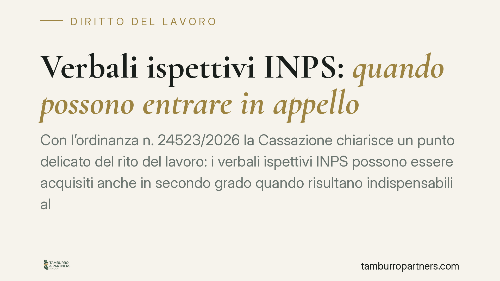
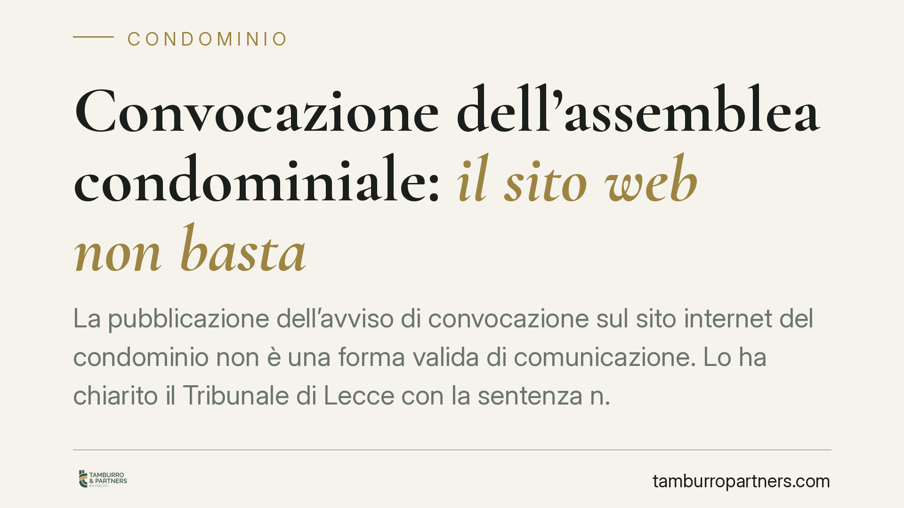
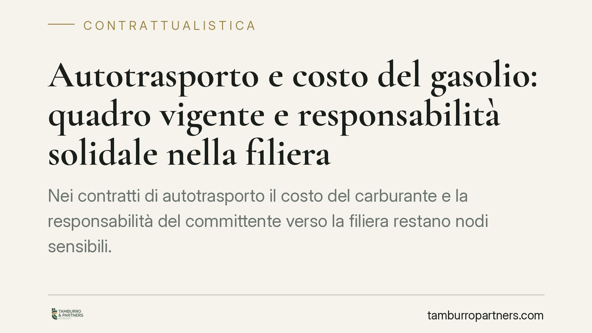
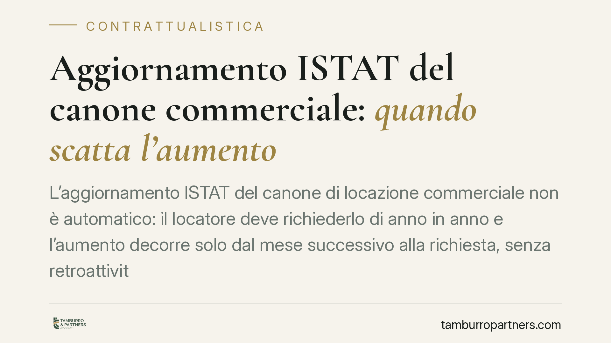
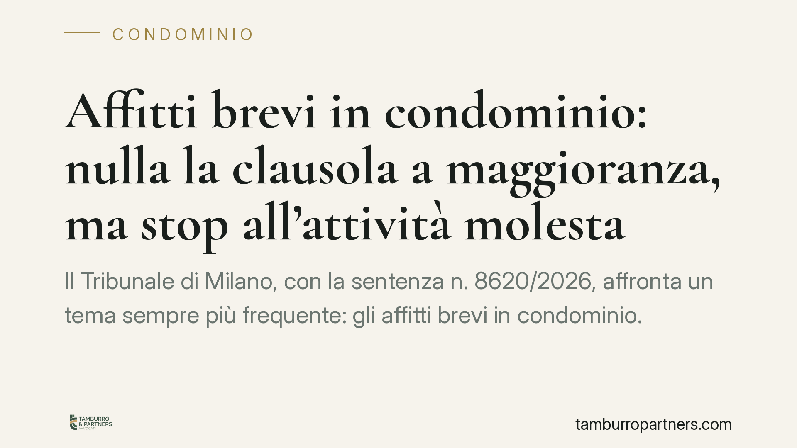
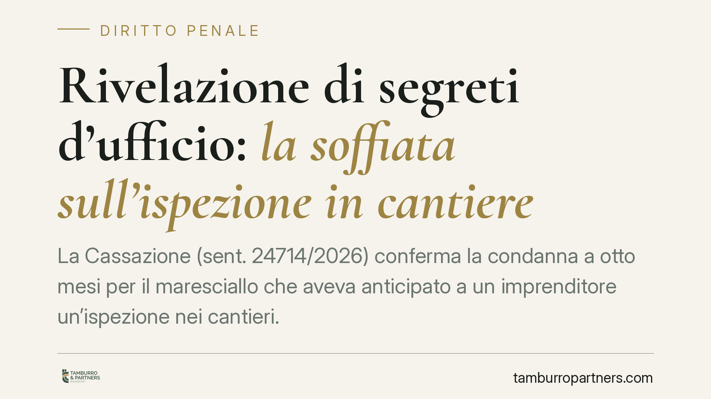
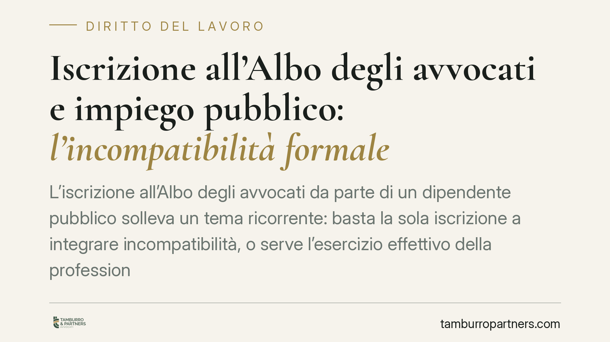
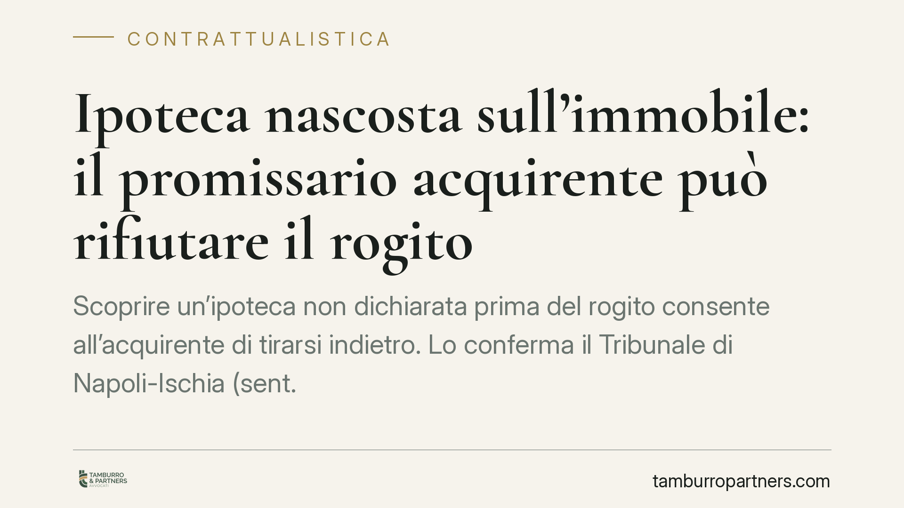
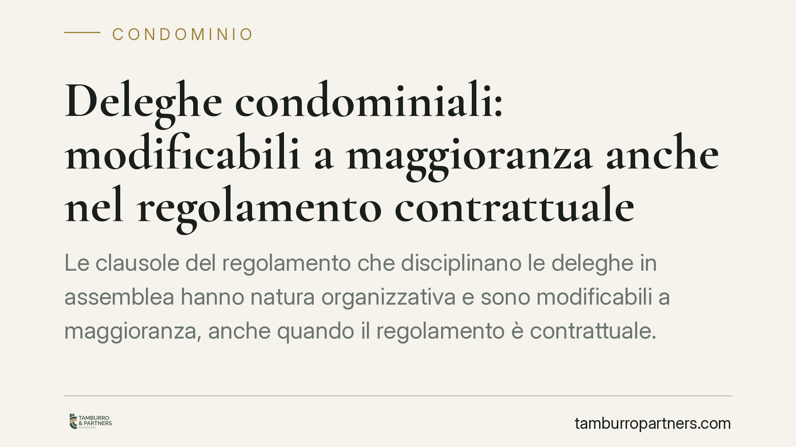

Verbali ispettivi INPS: quando possono entrare in appello
Con l'ordinanza n. 24523/2026 la Cassazione chiarisce un punto delicato del rito del lavoro: i verbali ispettivi INPS possono essere acquisiti anche in secondo grado quando risulta…

Superminimo e assorbimento: quando gli aumenti lo riducono
La Cassazione ribadisce un principio che pesa sulla busta paga di molti lavoratori: il superminimo, cioè la retribuzione pattuita sopra i minimi contrattuali, è di regola assorbibi…

Licenziamento del defunto: un solo erede può impugnarlo
Il Tribunale di Venezia ha affrontato un nodo poco esplorato: chi può impugnare il licenziamento di un lavoratore deceduto. La risposta è che basta un singolo erede ad attivare la …

Fideiussioni e clausole abusive: la CGUE ridisegna il giudicato implicito
Con la pronuncia C-667/24 la Corte di Giustizia UE torna sul rapporto tra giudicato implicito e tutela del consumatore. Il principio: il giudice deve poter verificare l'abusività d…
Tabelle millesimali sbagliate: quando e come correggerle
Una tabella millesimale che non somma a 1000 o che riporta valori sbagliati non è una fatalità da subire. Il Codice civile prevede strumenti precisi per rettificare o rivedere i mi…

Convocazione dell'assemblea condominiale: il sito web non basta
La pubblicazione dell'avviso di convocazione sul sito internet del condominio non è una forma valida di comunicazione. Lo ha chiarito il Tribunale di Lecce con la sentenza n. 265/2…

Assegno all'ex coniuge: l'INPS non può sospendere la trattenuta senza giudicato
Finché la sentenza di divorzio non è definitiva, l'assegno trattenuto dall'INPS sulla pensione dell'obbligato continua a essere dovuto. L'ente non può interrompere il versamento in…
Patto di prova con mansioni in inglese: quando è valido
La Corte d'Appello di Brescia (sent. n. 244/2026) ha confermato la validità di un patto di prova che indicava la qualifica in inglese, 'Marketing and Communication Manager'. Per i …

Vendita dell'appartamento e impugnazione delle delibere condominiali
Chi vende l'appartamento può ancora contestare le decisioni assembleari del condominio? Il Tribunale di Palermo, con la sentenza 3605/2026, traccia una linea netta: dipende dal tip…

Selezione del personale e intelligenza artificiale: l'algoritmo non decide da solo
Sempre più aziende usano software di intelligenza artificiale per filtrare curriculum e valutare candidati. Ma la Legge 132/2025 e il Regolamento europeo sull'IA fissano un limite …

Acquisto del lastrico solare e vano ascensore: cosa resta al condominio
Comprare una porzione di lastrico solare con diritto di sopraelevare non significa diventare proprietari della colonna d'aria che ospita il vano ascensore. Lo ribadisce la Cassazio…

Autotrasporto e costo del gasolio: quadro vigente e responsabilità solidale nella filiera
Nei contratti di autotrasporto il costo del carburante e la responsabilità del committente verso la filiera restano nodi sensibili. Circolano notizie su una riforma dei parametri d…

Aggiornamento ISTAT del canone commerciale: quando scatta l'aumento
L'aggiornamento ISTAT del canone di locazione commerciale non è automatico: il locatore deve richiederlo di anno in anno e l'aumento decorre solo dal mese successivo alla richiesta…

Genitore intenzionale e difetto di progetto di vita: i limiti del riconoscimento
Una recente pronuncia di legittimità riaccende il dibattito sul riconoscimento del minore da parte del genitore intenzionale nelle coppie omoaffettive. Il tema tocca il confine tra…

Revoca della detenzione domiciliare: la violazione delle prescrizioni non è automatica
Violare una prescrizione della detenzione domiciliare comporta il ritorno automatico in carcere? No. Con la sentenza n. 40693/2026 la Cassazione ribadisce che la revoca ex art. 47-…

Partita IVA senza incassi e NASpI: la decadenza non è automatica
Aprire una partita IVA mentre si percepisce la NASpI non comporta, di per sé, la perdita dell'indennità. Lo chiarisce il Tribunale di Milano: senza incassi effettivi non c'è reddit…

Affitti brevi in condominio: nulla la clausola a maggioranza, ma stop all'attività molesta
Il Tribunale di Milano, con la sentenza n. 8620/2026, affronta un tema sempre più frequente: gli affitti brevi in condominio. Il giudice dichiara nulla la clausola regolamentare ch…

Atto notarile e clausole vessatorie: la forma non prova la trattativa
La veste solenne dell'atto pubblico notarile non dimostra, di per sé, che le clausole siano state davvero negoziate con il consumatore. Secondo un recente orientamento di merito, s…

Reato continuato: la querela non copre i fatti successivi alla denuncia
La Corte di Cassazione chiarisce che la querela copre solo gli episodi commessi prima del suo deposito. Per i fatti successivi, pur legati dal vincolo della continuazione, occorre …

Rendiconto condominiale: criterio di cassa o di competenza?
Il Tribunale di Roma, con la sentenza 5527/2026, richiamando la Cassazione, chiarisce che il rendiconto condominiale non può limitarsi alle somme materialmente incassate e spese. D…

Stipendi in contanti: la violazione non si sana con la busta paga in regola
Il Ministero del Lavoro ha confermato che il divieto di pagare le retribuzioni in contanti, in vigore dal 2018, non ammette rimedi tardivi. La sanzione resta dovuta anche quando il…

Rivelazione di segreti d'ufficio: la soffiata sull'ispezione in cantiere
La Cassazione (sent. 24714/2026) conferma la condanna a otto mesi per il maresciallo che aveva anticipato a un imprenditore un'ispezione nei cantieri. La notizia appresa 'per vie t…

Iscrizione all'Albo degli avvocati e impiego pubblico: l'incompatibilità formale
L'iscrizione all'Albo degli avvocati da parte di un dipendente pubblico solleva un tema ricorrente: basta la sola iscrizione a integrare incompatibilità, o serve l'esercizio effett…

Palpeggiamento improvviso e violenza sessuale: cosa dice la giurisprudenza
La Terza Sezione penale della Cassazione ha ribadito che un palpeggiamento improvviso può integrare il reato di violenza sessuale. La sorpresa impedisce alla vittima di manifestare…

Truffa via e-mail e licenziamento: la diligenza del dipendente secondo la Cassazione
Il dipendente che cade in una truffa via e-mail può essere licenziato per giusta causa se ha violato l'ordinaria diligenza professionale. Lo chiarisce la Cassazione con l'ordinanza…

Cedolare secca con conduttore società: conta la destinazione abitativa
Un immobile abitativo locato a una società, a un'università o a un professionista può accedere alla cedolare secca? La questione ruota attorno a un equivoco diffuso: contano la ves…

Riduzione dell'orario di lavoro: serve sempre il consenso del dipendente
Il datore di lavoro non può ridurre unilateralmente l'orario trasformando il rapporto in part-time. La Cassazione (sent. n. 16089/2014) ribadisce che serve sempre il consenso scrit…

Ipoteca nascosta sull'immobile: il promissario acquirente può rifiutare il rogito
Scoprire un'ipoteca non dichiarata prima del rogito consente all'acquirente di tirarsi indietro. Lo conferma il Tribunale di Napoli-Ischia (sent. 525/2026): l'ipoteca occulta è gra…

Cedolare secca e conduttore impresa: niente rimborsi retroattivi sull'Irpef
Le Sezioni Unite hanno chiarito che la cedolare secca si applica anche alle locazioni abitative con inquilino impresa. Resta però aperto il nodo pratico: i proprietari che negli an…

Deleghe condominiali: modificabili a maggioranza anche nel regolamento contrattuale
Le clausole del regolamento che disciplinano le deleghe in assemblea hanno natura organizzativa e sono modificabili a maggioranza, anche quando il regolamento è contrattuale. Resta…